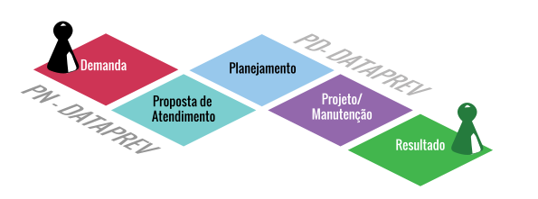
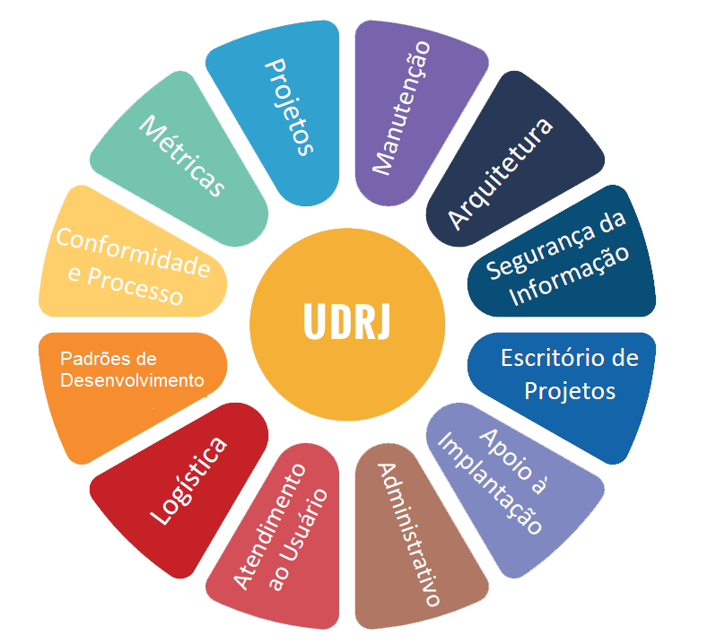
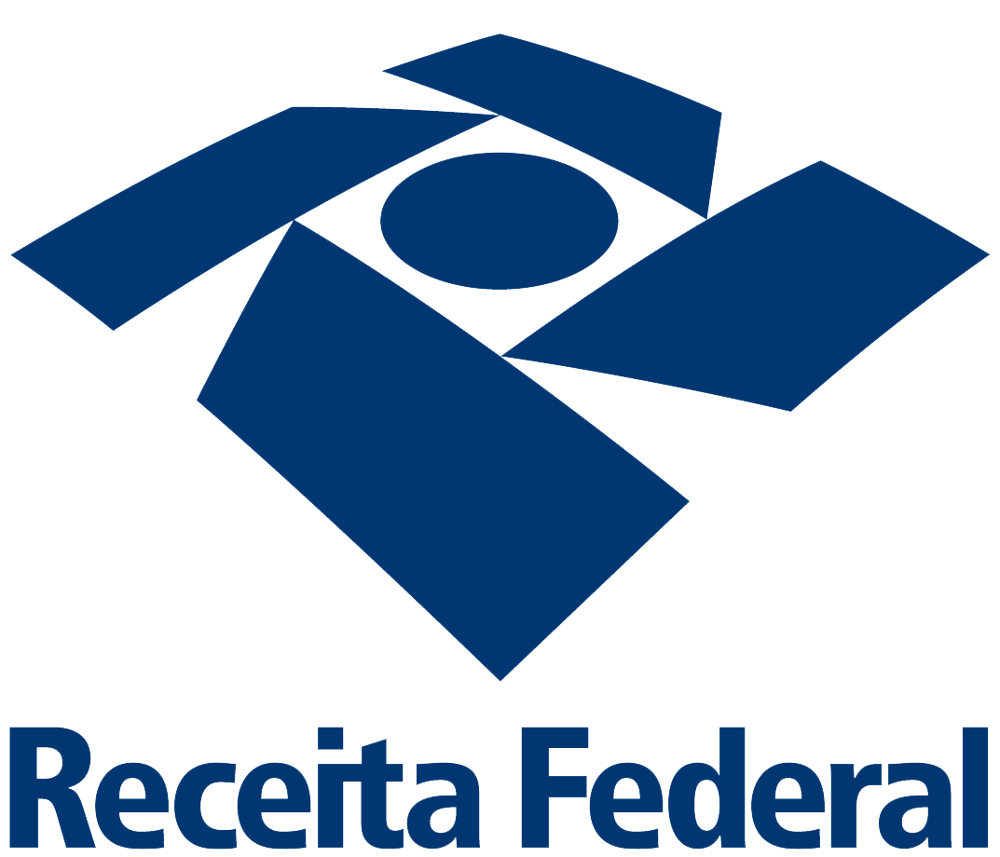
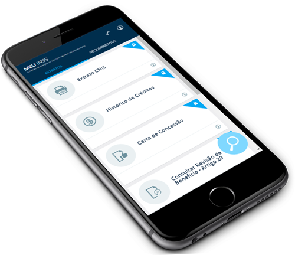

Unidade de Desenvolvimento do Rio de JaneiroRosane Moreira Soares Gerente da UnidadeNorma Suely Neder Stolet AssessoriaLeonardo Simões Assessoria TécnicaAndre Luiz dos Santos Gerente DMP4Paulo Ohno dos Reis Nonaka Gerente DMW4InstitucionalEquipe 132 ColaboradoresRJ - 110Outros - 22ServiçosDesenvolvimento e manutenção de Sistemas
Transacionais e AnalíticosApurações EspeciaisQualificação de DadosProcesso de Trabalho

Projeto / Manutenção

Ferramentas e TecnologiasMetodologiaAgileScrumDevOpsClientes

Produtos por clienteINSS - 35RFB - 16MPS - 9PGFN - 3Produtos INSSesocialExtrato CnisMeu INSSSUIBEBG EmprestimoAEPS
Outros
CI, GPS, PJ, CATCOMPREV, TCE IISIGMA, Sala de Monitoramento GET Serviço Social, DEBCON DRSCI, Super Triagem
Projetos do INSS em AndamentoEsocialExtratoPJ e Baixa RendaCentral de ServiçosTCE IIBG SUIBEAEPSQualificação de Dados CV3Projetos Outros Clientes 2017Plataforma de AutenticaçãoPainel de Relacionamento com ClienteGESCON - Gestão de Consultas RPPSSDC CV3Projeto RFB 2017Meu INSS

Apresentação
Visão Geral
Visão Estratégica
Visão de Negócio
Visão de Produto
Próximos passos
Visão GeralVisão EstratégicaVisão da Dataprev sobre a solução: Necessidades e OpotunidadesPlataforma de autenticação
Solução de autenticação e identificação de Cidadão.
MotivaçãoProblema de autenticação do INSSRedução de filas do INSSDesafiosPerguntas (KBA)PresencialNíveis de concessão de senhasAtendimento ao usuárioOportunidadeAutenticação GovernamentalGateway de API
Segurança e controle de acesso
Motivação Proteger as APIs da Dataprev na internet DesafiosInexistência de solução similar na empresaFalta de expertise:
Gateway de APIsSegurança de APIsIntegração com solução de mercado (abandonado)OportunidadeSolução de bilhetagem corporativa centralizadaUniformizar os acessos as APIsMeu INSSInterface Responsiva: Melhoria no acesso e aproximação com o ClienteMotivaçãoMelhorar a apresentação dos serviços entregues ao cidadãoDesafiosTecnologia nova sem padrão definidoOportunidadeAumentar a agilidade no deploy de alterações de layoutEntregar aplicações voltadas para o cidadãoMobilidadeAPI'sRegras de Negócio e FuncionalidadesMotivaçãoNovo modelo de cobrança baseado em uso das API'sPadronizar o acesso as APIs (contrato)Fomentar o uso de serviços na casaDesafiosBarramentoGovernançaInfra (legado)OportunidadesImplantar uma cultura de SOA na casaVisão de NegócioPosição de Negócio sobre a solução: Pedidos e DemandasPlataformaMotivaçãoMelhorar relacionamento com o clienteDesafiosCidadão como cliente do produtoOportunidadeDesenvolver aplicações governamentais para o cidadãoContatosThiago MendanhaWilliam Veronesi Rocha (DESC)Marina VelosoMárcia BezerraRidai Govinda Pombo (DICA)Thiago AlmeidaFernando MagalhãesGatewayDesafiosVisão de software como serviçoOportunidadeGerar negócios e vender serviços aos clientes ContatosMeu INSSMotivaçãoMelhorar a apresentação dos serviços entregues ao cidadãoDar agilidade as demandas de front-endAumentar o numero de serviço oferecidos a DIRATDesafiosClientes (pessoas) diferentes com demandas diferentesAgilidadeOportunidadeProvar capacidadeContatosRafael RubemMárcia BezerraPedro NetoJorge LageMárcia MiguesAlexandre OliveiraMarina VelosoVisão de ProdutoSobre o Produto: Tecnologia e DesenvolvimentoPlataforma de AutenticaçãoDesafiosExtrair dados das bases para responder as perguntas (KBA)Batimento inicial da pessoa com a base do CNISCertificado Digital (HTTPS)Captcha Plataforma de AutenticaçãoDesenvolvimentoFramework DTP 4.0.5PrimefacesJPAWeblogic 12.1.1Oracle 12cAmbientes:
Desenvolvimento (Nuvem)HomologaçãoProduçãoMódulos: Internet, intranet, negócio, servicePlataforma de AutenticaçãoServiçosGerar token para o SatAutenticarTrocar senha